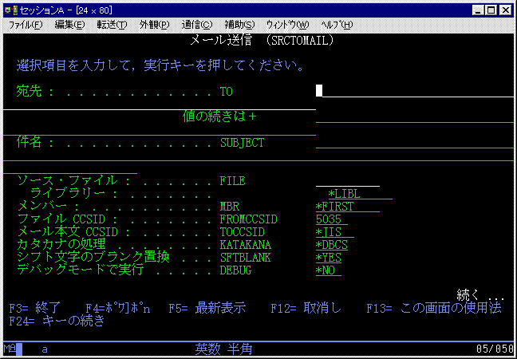
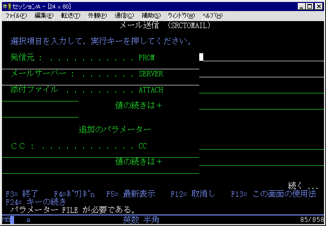
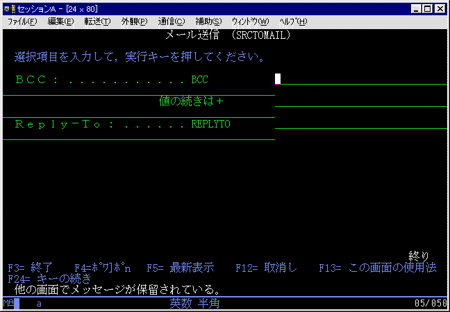

＜概要＞
ソースファイルのメンバーをSMTPを使用して、指定先のメールサーバーに送信するＰＧＭです。
AS/400のSMTPは使用せず、プログラム内部で、独自にソケット通信を行います。
メールサーバーは、AS/400でも Unix などでも構いません。



Version 2.04の主な修正
Version 2.03の主な修正
- CCSIDの指定が機能していませんでした。
- 5026(290)のカタカナを全角に変換する際に、「゜」「゛」が前の文字についていません。
(例）「か゛」=>「が」
Version 2.02の主な修正
Version 2.01の主な機能拡張
- シフト文字をブランクに置き換えるオプションを追加しました。
- JOBLOGの出力を減らし、DEBUGオプションを追加しました。
Version 2.00の主な機能拡張
- 添付ファイルをサポートしました。
ＩＦＳ上のファイルを添付できます。（最大300個）データ変換は行いません。そのまま添付するだけです。
- メール本文のCCSIDと読込みファイルのCCSIDをパラメーター指定可能としました。
CCSIDの組み合わせで、シフトJIS,EUCのメール本文も作成可能です。デフォルトは 5035/JIS です。
- 半角カタカナを全角カタカナに変換します。
- *DBCS 半角カタカナを全角カタカナに変換します。
- *NONE 半角カタカナを半角カタカナとして扱います。
半角カタカナはCCSID 5026/290 5035/1027に対応しています。
- ソースファイルを読込む際に、レコード長を参照するようにしました。
レコード長が長い，短いソースファイルの送信も可能です。また、ファイルがソースファイルでない場合も送信可能としました。
もしシフト文字(0E/0F)以外の印刷不能文字が含まれていた場合には、プランクに置き換えます。
- メールの宛先は、To,Cc,Bcc 各々300個までパラメーター指定可能です。
これは、AS/400のコマンドの制限であり、サービスプログラム内部ではTo,Cc,Bcc合わせて1024個までのエリアを用意してあります。
- 今までにご報告いただいた不具合、バグについては当方でテストを行い正常稼働を確認しているつもりです。
しかしながら、もしご報告いただいているバクが修正されていない様でしたら、大変申し訳ありませんが再度ご連絡ください。
|